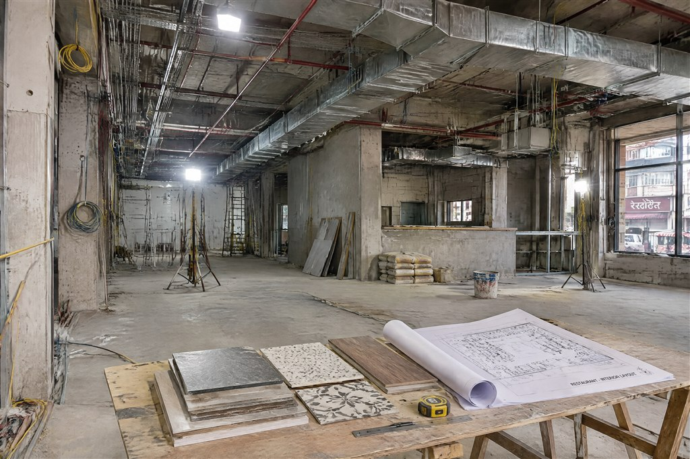
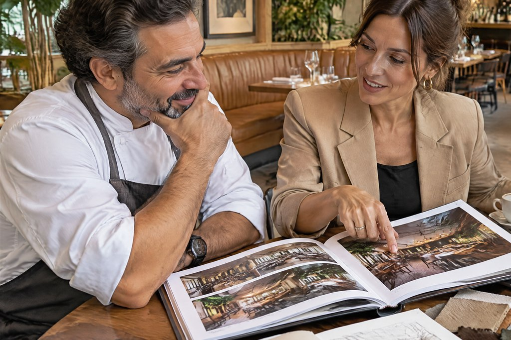

If you're planning a restaurant, café, bar or QSR, understanding the cost of interior design is only half the decision. The other half is choosing the right design partner.
Restaurant owners increasingly compare interior design costs in India alongside reviews, portfolios, completed projects and timelines before deciding whom to work with, and that makes sense. The lowest quotation doesn't necessarily deliver the lowest final project cost. Poor planning, repeated revisions, coordination gaps, unsuitable materials and delayed execution can all push the real investment well past the number on the first quote.
This guide covers what actually affects restaurant interior design costs in India, then — just as importantly — how to evaluate reviews and completed projects before you choose a designer.
Key takeaways
- There's no single per-sq-ft figure for restaurant interiors: format, site condition, materials and kitchen complexity move the number far more than area does.
- The lowest quote and the lowest final cost are not the same thing. Scope missing from a quotation tends to reappear later as a change order.
- A star rating tells you what someone charges to be reviewed about. The written comments tell you what it's actually like to work with them.
- Compare reviews against completed, photographed projects in your format, not renders.
- SprintCo's coordinated design-build approach can target roughly 30–45 days for suitable projects.
How Much Does Restaurant Interior Design Cost in India?
There isn't one reliable cost-per-sq-ft figure that applies to every restaurant. Two restaurants with exactly the same area can need completely different budgets. A functional 1,000 sq ft QSR may prioritise efficient counters, durable materials, kitchen workflow and fast customer circulation. A 1,000 sq ft cocktail bar on the same footprint may need custom bar fabrication, acoustic treatment, specialist lighting and detailed millwork — at a very different price.
For the detailed per-sq-ft ranges we publish, and what moves a project between budget, mid-range and premium, see our restaurant interior design cost guide. This page focuses on what else should shape your decision: what drives the number beyond area, and how to choose who you build it with.
What Else Moves the Budget
- Format. A café, QSR, casual-dining restaurant, fine-dining restaurant and cocktail bar each need different levels of kitchen infrastructure, furniture, lighting, customisation and seating. Define the format before pricing it.
- Location. Metro markets such as Mumbai, Delhi NCR and Bengaluru generally carry higher labour, logistics and material costs than many Tier-2 locations. The property type — mall, airport, high street or standalone — adds its own approval and execution requirements on top.
- Existing site condition. A bare shell typically needs electrical infrastructure, plumbing, HVAC, flooring, partitions, fire-safety coordination and civil work that a renovation can often partly avoid. Either way, have the existing services properly assessed before you budget.
- Material selection. Laminate versus natural veneer, vitrified tile versus natural stone, standard versus bespoke furniture and lighting — premium finishes and heavy customisation naturally raise the number. A good designer recommends materials on durability, maintenance and budget fit, not appearance alone.

These same drivers play out differently by format. Café fit-outs usually scale from functional counters and standard furniture up to bespoke lighting and barista stations — see our café interior design cost per sq ft guide. Bars typically carry extra cost in custom counters, back-bar displays, bottle and glass storage, acoustic treatment and bespoke seating — more on our bar and pub design page. QSR budgets usually prioritise durable materials, ordering counters, kitchen workflow and queue management over decorative detail, and standardised layouts pay off across multiple locations — see our QSR design and build page.
Where Does the Budget Actually Go?
A restaurant budget isn't just furniture and finishes. Spend typically falls across seven areas:
- Civil & MEP – flooring, electrical, plumbing, HVAC, partitions and civil modifications
- Commercial kitchen – cooking, refrigeration, preparation, washing, exhaust, fresh air and storage
- Furniture & fixtures – chairs, tables, booths, counters and custom joinery
- Ceilings, walls & panelling – feature surfaces, acoustic treatment and ceiling systems
- Lighting – ambient, task, accent and decorative
- Signage & branding – façade signage, graphics, menus and wayfinding
- Compliance & approvals – fire, structural, municipal and property-specific requirements
A beautiful feature wall won't rescue a kitchen with poor workflow. Budget the difficult-to-change operational elements first; for a full breakdown of what a BOQ should (and shouldn't) include, read our BOQ guide.
Why Reviews Matter When Comparing Restaurant Interior Designers
Cost tells you what someone charges. Reviews tell you what it may be like to actually work with them. But don't judge a design company by its star rating alone. Read the comments, and look for repeated references to:
- Design understanding
- Communication
- Timeline management
- Responsiveness
- Problem solving
- Budget transparency
- Technical coordination
- Attention to detail
One detailed review describing how a designer handled a difficult site or a tight timeline is worth more than ten generic five-star comments.
Reviews and Portfolio: Use Both
Reviews shouldn't be read in isolation. Compare them against the designer's actual completed hospitality projects, and ask:
- Do they have experience with your format? A designer who mostly works on residences may approach an F&B project very differently from a hospitality specialist.
- Can you see completed restaurants, not just renders? Finished-project photographs show whether the design intent actually translated into a real, working space.
- Do they understand operations? Good restaurant design addresses customer flow, seating, kitchen coordination, service circulation and maintenance, not just how the render looks.
- Have they worked with established F&B brands? That kind of experience usually means familiarity with brand standards, approvals, technical coordination and repeatable rollout.

What Should a Genuine Review Actually Tell You?
A useful review usually says something about how the team understood the brief, solved a specific space-planning problem, coordinated technical trades, communicated during the project and delivered the agreed scope — not just that the result “looked great”. Treat a page that offers only star counts with no specifics, or testimonials with no identifiable project behind them, as a weaker signal.
The more useful comparison is reviews read alongside real, photographed projects. See our client list and completed work rather than taking any single claim — ours included — at face value.
Does Faster Delivery Actually Save Money?
Often, yes. Every additional week before opening can mean more rent, site overheads, labour costs, financing costs and revenue lost to a site that isn't trading yet.
SprintCo's coordinated design-build approach, including FlatPack modular joinery built off-site while the site is being prepared, can target roughly 30–45 days for suitable projects — around half the time of a typical sequential build, though this still depends on scope, approvals, site readiness and materials. Faster shouldn't mean rushed: the aim is to save time through better planning and coordination, not by skipping technical requirements. See how traditional and modular construction compare.
How to Choose a Restaurant Interior Designer in India
Before appointing a designer, evaluate five areas:
- Hospitality experience – have they actually designed restaurants, cafés, bars or QSRs?
- Relevant portfolio – are their completed projects comparable to what you're planning?
- Client feedback – what do genuine clients say about communication, design quality and project management?
- Technical capability – can they coordinate kitchen, MEP, lighting, furniture and other specialist requirements?
- Commercial understanding – do they treat your restaurant as a business, not just a photogenic interior?
The right partner balances creativity with operational and commercial thinking. For a longer checklist, see our guide to choosing a restaurant interior design company.
Why SprintCo for Restaurant Interior Design
SprintCo designs and builds restaurants, cafés, bars, QSRs and other hospitality spaces — more than 4,000 F&B spaces for 400+ brands, including Pizza Hut, Domino’s, Social, BrewDog and Haldiram’s. Our process runs from customer journey and seating through kitchen coordination, lighting, materials, furniture and technical documentation under one team, rather than handed between separate vendors.
Before you take any marketing claim at face value — ours included — look at the completed projects and genuine client feedback behind it. That's a better way to judge whether a team's experience actually matches your project. Explore our restaurant interior design portfolio or book a free consultation to talk through your scope, budget and timeline.
Frequently Asked Questions
How much does restaurant interior design cost in India?
There is no universal cost per sq ft. Restaurant format, city, site condition, materials, kitchen requirements, furniture, technical services and design complexity all influence the final budget.
How should I compare restaurant interior designer reviews in India?
Look beyond star ratings. Read reviews for specific comments about hospitality experience, communication, budget transparency, problem solving, timelines, technical coordination and completed project quality.
What should I check before hiring a restaurant interior designer?
Review completed hospitality projects, genuine client feedback, scope of services, technical capabilities, project process, fees and experience with your type of F&B business.
Why do restaurant interior design costs vary so much?
A QSR, café, casual restaurant, fine-dining venue and cocktail bar require different kitchens, furniture, materials, lighting, technical services and levels of customisation, even at an identical floor area.
Is the cheapest restaurant interior designer the best option?
Not necessarily. Compare the complete scope rather than price alone, because missing drawings, coordination, revisions or technical services can create additional costs later.
How long does restaurant interior design and execution take?
Timelines depend on project scope and complexity. Small cafés and QSRs may target around 30 to 45 days for suitable projects with a coordinated design-build team, while larger or more complex restaurants can take considerably longer.
Are online reviews enough to choose a restaurant designer?
No. Reviews should be evaluated alongside completed projects, hospitality experience, technical capabilities, scope and direct discussions with the design team, not read in isolation.
Does SprintCo design restaurants across India?
SprintCo works on restaurant, café, bar, QSR and hospitality design projects across India. The right fit for any particular project still depends on location, scope and relevant experience, which is worth checking directly.